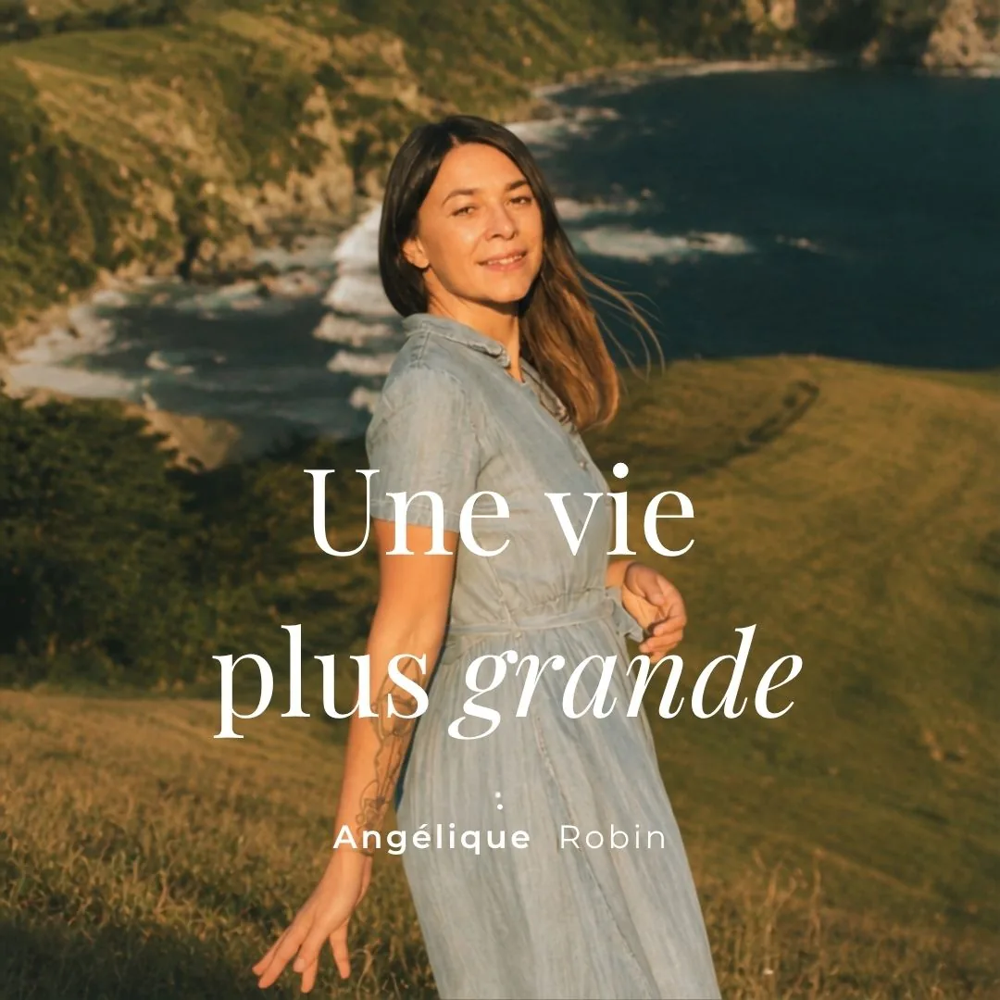

Une vie plus grande, c'est une vie que tu crées en fonction de tes plus hautes valeurs.
Tes plus hautes valeurs sont ton moteur intérieur. Là où va ton temps, ton argent, tes pensées, ton énergie. Quand tu construis ta vie à partir de là, tes décisions, ton travail, tes relations deviennent plus fluides.
La procrastination, les blocages, tout ce qui se répète et qui te draine, ce sont les symptômes d'une vie qui s'est éloignée de ce qui est important pour toi.
Le coaching t'aide à trouver tes valeurs, ta raison d'être, et à construire une vie en phase avec qui tu es vraiment. Il t'aide à réaliser un objectif, à dépasser un défi de vie, à opérer une transition après un changement de vie, à faire des choix justes pour toi.
Il t'aide à oser ce qui te paraissait trop grand, voire impossible pour toi : lancer un projet, une entreprise, faire enfin ce dont tu rêvais depuis toujours.
En résumé, le coaching t'aide à (re)trouver ta place.

Change ton monde intérieur
pour transformer ta vie.
Parce que ta vie extérieure est souvent le reflet de tes croyances, des autorisations que tu te donnes, et de ce que tu portes encore de ton passé.
Une certaine étape de mes accompagnements te permet d'équilibrer tes perceptions sur tes expériences passées. À ce moment-là, tu changes de regard sur ta vie. Les charges s'apaisent, et tu peux construire depuis un monde intérieur apaisé.
Et c'est depuis cet endroit-là que tout peut vraiment changer et que tu peux construire sur des bases solides.
De la quête de moi-même à l'alignement
Pendant longtemps, j'ai cru que je devais rentrer dans le moule.
Jusqu'à ce que je comprenne que mes particularités étaient en réalité ma boussole.
Mon chemin m'a menée de la quête de moi-même à ma raison d'être, jusqu'à la sortie du mode pilote automatique. C'est depuis cette connaissance de moi-même que j'ai créé plusieurs entreprises, et ce depuis 2011.
Découvrir mon histoire →Trois façons de cheminer avec moi
Coaching 1:1
Avec mon accompagnement Lotus, je t'aide à atteindre un objectif, créer un projet professionnel ou entrepreneurial, traverser une transition, ou dépasser un défi, un blocage. En somme, quelle que soit ta situation, je m'adapte à ta demande et je t'accompagne vers un changement positif et durable.
En 3, 6 ou 9 séances
Coaching d'impact
Un coaching 1:1 à la séance, pour prendre de la hauteur ou clarifier une situation, te débloquer quand tu stagnes, comprendre un comportement qui t'interroge, mais aussi prendre une décision importante, dépasser une peur, obtenir un déclic. En une séance, je t'aide à voir ce que tu ne voyais pas, et tu te remets en marche.
Une séance · un déclic
Colette IA
Colette est une formation de groupe en ligne et en direct, pour les coachs et thérapeutes : je t'aide à installer ton Second cerveau et ton ruissellement de contenu assisté par l'IA. Pendant 2 mois, tu crées ton équipe IA qui travaille pour toi pendant que tu accompagnes.
Version bêta · octobre
Les mots de mes clients
« Je vous recommande Angélique, pépite de coach qui vous accompagne à aborder vos projets de manière efficace, avec en bonus un pas de plus vers la découverte de vous-même. »
« Je remercie Angélique pour son écoute attentive, son professionnalisme, toutes les ressources et connaissances qu'elle a pu mettre à mon service. Ce fut un travail riche et intense qui porte ses fruits. »
« Elle m'a aidée avec patience et bienveillance à faire le bilan sur ma situation et ce que je souhaitais vraiment pour la suite. Aujourd'hui, j'ai le courage de prendre un nouveau départ en toute confiance. »

Une vie plus grande
Une vie plus grande, c'est le podcast de celles et ceux qui veulent créer une entreprise alignée à leurs plus hautes valeurs. On y parle de se connaître pour trouver sa voie, d'oser se lancer après le salariat, de transformer un projet de cœur en quelque chose de viable, et de tout ce que l'entrepreneuriat nous invite à devenir en chemin. Parce qu'avant d'être des stratégies ou des chiffres d'affaires, les entrepreneur·es sont avant tout des humains.
En savoir plus